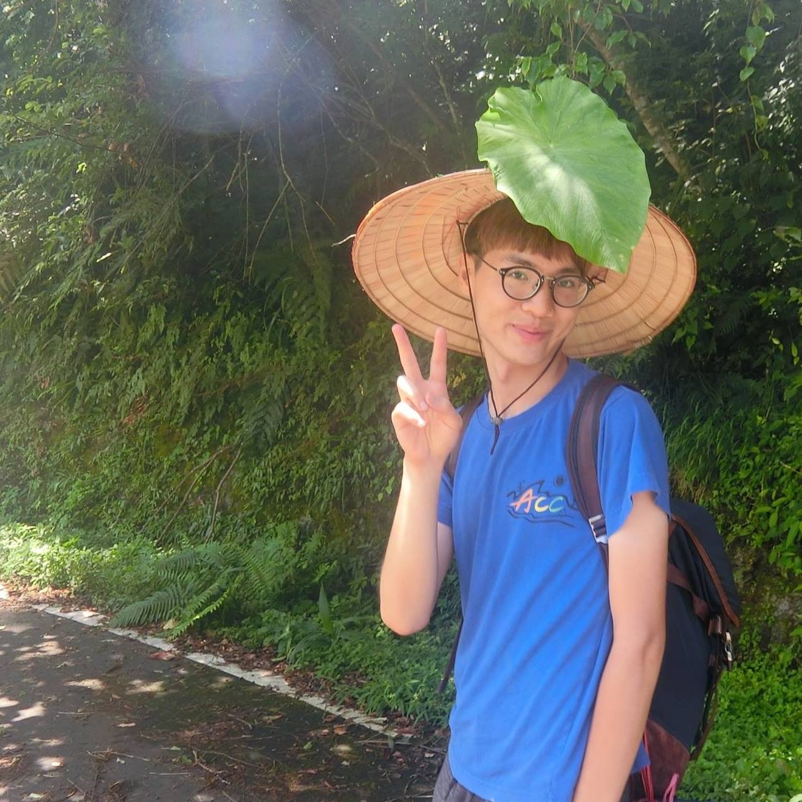

公司職員簡介
姓名 : 蘇俊哲
職稱 : 2017泰崗小隊長、2017原創週美食股長、2016假日營美宣股長、2017冬令營美宣股長
入社年份 : 2015-2017
特殊表現 : 髮色多變、倉鼠成癮者之一、糖尿病患者、未來的洗腎人口、主修冰，輔系甜點，雙專長鳳梨、燃脂有氧老師的愛徒，佳霖的直屬、cover twice舞蹈專業戶
員工表現
林勳諺
以後再一起上山阿你比王政勛好多了愛你畢業快樂
泰崗大帥哥
我覺得你超好笑的，尤其是我每次講完冷笑話之後，你一臉要高潮的僵硬臉孔，希望之後可以再一起上山QQ。喔對了林勳驗很醜，不要愛上他
琪鑒
哲哲謝謝你是我一進原文的第一個股長！我覺得超幸運的～你是很好的股長，也是非常好相處的朋友，我想如果沒有你我也不會陷入原文這麼深，可以說又愛又恨哈哈！這兩年謝謝你喔～祝你未來一切順利！要揪夜唱喔～哈哈
祈瑋
第一次看到有人跳女舞可以跳得比女生還性感，真的是很扭!有你的原文才會這麼歡樂，聽你直率亂講八卦聽的會通體舒暢~然後畢業快樂，之後一切順利~
佳霖
希望以後能看到你一邊跳舞一邊做甜點
喔對我是魏孜旻
噢是泰崗小隊長耶！其實我剛進原文時覺得你蠻不錯帥的，但後來發現怎麼可以有人表情那麼醜。但你還是很好的小隊長拉，祝你畢業快樂！
依潔
阿里營很晚才變熟的一位朋友，但你真的要少吃一點冰為了身體健康！跳舞真的宇宙無敵嚴格，但真的很負責任，希望你未來對很多事也保有一樣的熱忱，還有期末社大交換禮物你發現我會畫畫但都不加美宣股說我很雞掰，我都會一直記得，真心祝福也希望你未來一切安好順利。
❤️BY妤
我在原文的第一批股長，謝謝你把美宣帶的這麼好，還有泰崗。雖然第一次股聚你就對我不友善，但是你應該是我最愛的19之一唷，謝謝你之前幫我解惑上山的意義(或是你忘了)，跟你們一起上山很快樂，撇除三不五時會被推下山的風險的話。謝謝你們三個是泰崗的小隊長，因為你們才讓我們這麼喜歡泰崗，希望以後還可以一起上山玩哈哈，畢業快樂
源芳
真的不得不說冬令加表演舞的時光是我在原文很重要很特別很快樂的一段回憶!!忘了我那時為啥選表演舞這個完全不適合我的活動，但還好我選了然後認識這麼搞笑這麼怪的你XD你也是個很棒的泰崗小隊長，還是讓我很愛原文的原因之一，謝謝你～～畢業快樂喔！
皓淳
加入原文後就一直跟隨著你就這樣一路跟到了泰崗。不管是持續了半年在社窩的美宣時間，還是在準備社大超屌表演時狂喝超大罐舒跑，或是在泰崗的各種爆笑和推下山，雖然和你一起共事的日子真是多到爆炸，但能想起的所有時光都是開心到不行欸！謝謝你充滿了我在原文的回憶(?)不知道為甚麼很想再跟你跳一次舞哈哈哈，那就畢業快樂啊~
珊羽
在做了你多次股員的緣分下，真的覺得你是個不錯的股長，總是能活躍股劇氣氛，美宣&舞蹈能力值Max，，非常厲害，畢業快樂啦。
展
路過來蓋個樓，謝謝你成就了我，讓我成為一位有天份的藝術家，美宣股的時光真的非常難忘。
緋聞男友ㄐㄩ
寶貝哲哲❤️突然要打也不知道要說什麼，你是一個高度樂觀的人，雖然講話機掰但是不失幽默，然後又有很多厲害的skill，像是畫畫跳舞切鳳梨，跟你在一起就自然會發生很多愉快的事情，可以一起聊八卦罵人、一起唱歌一起練舞、一起做蛋糕，一些看似簡單平凡的事情因為有你而變得不一般。我是真的很捨不得你們要畢業了，我好怕以後再也沒有這麼一群朋友願意花大把時間做同一件事，也好怕沒有人可以再聽我吐苦水，或是教我什麼事該怎麼做怎麼想，但還是祝福你畢業快樂，希望未來你可以開心的做自己想做的事情，難過或無聊的時候，不要忘記我們，可以隨時face time或是直接衝來新竹high，最愛你了，愛心愛心❤️
林斈
你要不要快點頂下貓底聘用我當店長:3好啦不知道要說什麼，總之謝謝你唷很多事情，畢業後要一切順利<3